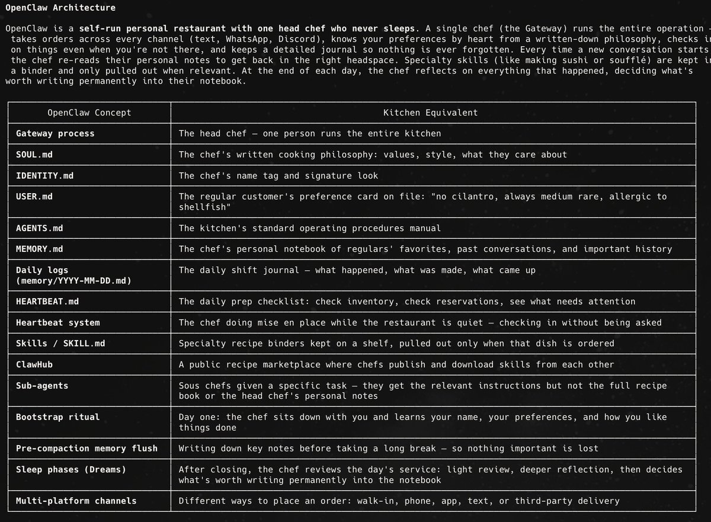
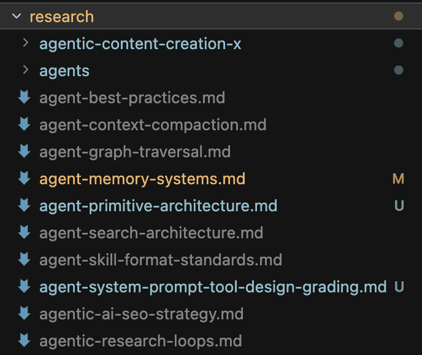

I was recently ranked in the top 1% of engineers at small startups and #1 of all non-technical people on a engineering output platform called Weave. I've pushed half a million lines of (high quality) code to production since then and regularly ship features end-to-end in a day that would have taken a senior engineer weeks or months in the past. But before November, I was nontechnical AF. The only coding experience I had was a few CS classes in college. I was also a PM on some technical teams, but I'm not going to lie, I had no idea how any of the stuff really worked. That obviously changed, in part due to the obvious advances in AI coding models, but also in part due to the process I've developed.
It has 3 elements: Using metaphors to allow your agent to explain things to you in a way you understand them. Using open source and writings from around the internet to create product specs relevant to your codebase Working with the agent like a great manager using the socratic method Metaphors you build by The way humans understand anything is through conceptual metaphor. When you say "the foundation of the economy" you are using the metaphor of a structure to understand the economy. There isn't a single "abstract" concept that does not have a physical metaphor underlying it - its how the brain works! When you apply your own set of metaphors to computer science you can make even complex topics accessible.
All you have to do is set up your metaphor mappings and have your agent explain things using them whenever you're stuck. You can either use the restaurant kitchen metaphor (most popular and what I use) or run this prompt to come up with your own:
Here's an example of my metaphor mappings and how Claude uses them to explain things to me:
The Internet Brain Workflow
99 times out of 100, whatever you're trying to build has been built already. Even for the most cutting edge agentic systems these days, open source codebases are available within hours of a new idea being shared. You should copy what's out there. Partially because its easier and faster, but mostly because you probably won't create something better yourself. Here's how to put this into practice:
Set up your knowledge base
The first thing you should do is create a knowledge base folder with subfolders for research and proposals. Within research you want subfolders for internal (your own codebase) and external (others). Now kick off an agent to read through your codebase and write a handful of MD files describing how everything works.
Run the research loop
When you want to build a feature, you'll kick off the research loop:
Discovery (optional)
Finds new ideas for you to build.
Have the agent set up a cron job to identify any new features or architectural improvements you should add to your product based on research it conducts on the web, X, reddit, etc. It should leverage documentation in your knowledge base about your product (and ideally any engagement metrics via MCPs) to pick focus its search on the right things. Output should be a handful of items for the agent to research in the next step.
Interview (optional)
Asks you questions to understand what you want
Have the agent interview you about a given feature you're looking to implement it to understand your intent and the success criteria.
Research
Reads all existing work on the internet related to your feature
Kick off an agent to do deep research on any and all open source repos, blog/X posts, and anything else related to that feature focusing on the most credible sources.

Document
Writes down its findings to use later
Have it synthesize its findings in one or more MD files in your research/external folder. These MDs may be focused on specific features across sources or specific sources.
Propose
Creates a proposal for how to implement your feature
Then have the agent review all the research, your internal research on your own codebase, relevant parts of the codebase itself, and anything else necessary to produce a proposal for how to implement the feature. Ensure it offers 3-5 options and notes pros and cons, effort, risk, etc for each.
Compound your skills
The most useful thing to run the research loop on initially is coding agent skills themselves. Depending on what you're working on, you will want to find or create skills for technical best practices (e.g. UI engineering) as well as the development process itself (next section).
Be a great manager
The best managers in the world don't always have domain expertise in the area they are managing. You don't need to be technical to manage a technical team, but you do need to do what great managers do: Simply ask the agent to review its own work. I created a handful of tools based off of writings and OS repos from Garry Tan (gStack) and Boris Cherny (Creator of Claude Code) that I use before and after implementation: Before: /plan-eng-review - Has the agent kick the tires on the proposal it made, identify gaps and then fill them before implementing. After /prove - Has the agent rigorously prove that what it built actually does what was intended.
This is particularly useful for bugs /tech-debt - Has the agent review everything looking for any tech debt that it introduced or existed beforehand and then fixes it. /grade - Best run in a separate session, but has the agent act like an elite CTO and grade various aspects of the code it wrote and propose fixes. Similar to tech-debt but more holistic. And if the agent is really stuck, like a good manager you should: /rethink - Suggests the agent rethink its approach and do web research if it needs to. /nudge - When the agent is really stuck, this prompt is essentially a mild threat to get it back on track. It tells the agent it will get reported to its creator and you will lose your job if it fails.
I rarely use this because its mean, but it works 100% of the time when I do.
Just ask Claude
The most important thing to know when getting into agentic coding is that the agent can do almost anything and help you with whatever you don't understand. Barring reading this article, my #1 piece of advice to people trying to figure out where to start is simply ask Claude. Case in point - the simplest way to put all of this into practice immediately is to copy and paste the text of this article into Claude Code and ask "help me do this."
It's a whole new world out there for nontechnical people. The barrier to creating great products is no longer skill, its agency.
This is my first article on X! Lmk what you think and if this could be valuable to someone you know, please share it with them.
